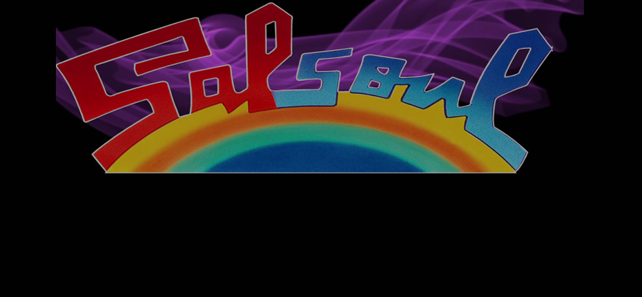

-

-

The Disco Revolution
Disco was a lot more than just a style of music.
For marginalized populations in the early seventies, namely people of color and gays, the disco lifestyle was an empowering outlet for sexual and personal freedoms. While white youths were experiencing free love and hippy sensibilites in the sixties, minorities in America were still fighting for basic civil rights.
Dance music and the club culture of the early discos allowed the oppressed to forget their problems and indulge in the same freedoms that white youths were already entitled to for over a decade.
Early disco music became extremeley popular WITHOUT the help of commercial radio airplay.
-

The Loft
Unlike most clubs, the Loft was a non-commercial dance venue that served no alcohol. Opened on Valentine's Day 1970 by DJ David Manusco, it quickly became the epicenter of disco nightlife in New York City.
Because the Loft was a private party destination and not a public dance club, police could not habitually raid and arrest gay partygoers.
Although beatmatching music together was the norm by most DJs at the time, Manusco was notorious for playing tracks the entire way through. He had an extreme admiration for the disco music played and wanted to enjoy the songs in their entirety. Partygoers enjoyed hearing their favorite sogns on Manusco's soundsytem, regarded as one of the best in it's time.
-
Paradise Garage and Larry Levan
Paradise Garage followed in the footsteps of the Loft: it didn't serve alcohol or food and operated on a membership-only basis to avoid police raids. However, the Garage could hold over 3,000 people and was the second largest club in New York City in the late seventies.
The club was specifically designed for the on-the-rise DJ, Larry Levan. He became the resident DJ at the club and was known for his legendary "Saturday Night Mass" DJ sets. Levan was a daring DJ -- mixing disco with gospel sermons, classic soul and rock music. He consistently surprised people during his night-long DJ sets and kept people dancing for hours.
Disco music wasn't promoted during this time: since it wasn't played on the radio, people could only here these tracks on the dance floor.

-

Birth of the disco 12"
Before the birth of disco, vinyl records were exclusively pressed for purchase in either the LP or 7" single format. But with the rise of DJs like Larry Levan, promotional copies of single songs began to be pressed. The 12-inch single format was more desirable to disc jockeys because they were easier to mix with than the other formats.
In 1976, a small NYC record label called Salsoul decided to hold a contest for the best remix of the song, Ten Percent by Double Exposure. DJ Walter Gibbons created a daunting nine-minute rendition of the oringally three-minute long track that stole the show and won the contest. Gibbon's remixed version of the song later became the first commercially available 12-inch disco single in the world. At this point, Salsoul, as well as other record labels across the country, realized the financial benefits of pressing commercially-available remixes.
-

Disco Goes Mainstream
In the late 70's, companies began noticing the commercial viability of disco music. Primarily white disco groups such as ABBA, The BeeGees and KC and the Sunshine Band became successful with the help of radio airplay. Mega disco clubs like Studio 54 attracted celebrities and the glitterati. The movie Saturday Night Fever truly pushed dance club culture into the mainstream and grossed over $200 million at the box office.
Even though Saturday Night Fever depcited a very gentrified picture of disco, it's popularity helped with the acceptance and normalization of black and gay culture originally entrenched in disco. Gay performers like the Village People and Sylvester were able to gain commercial success in America after disco's commercialization.
-

Death of Disco
At a baseball game between the Chicago White Sox and the Detroit Tigers, a riot happend all in the name of disco.
Steve Dahl, a rock-n-roll disc jockey from a local Chicago radio station, planned "Disco Demoliton Night" as a half-time event between two baseball games happening at the stadium. The second game never happened due to the bonfire in the middle of the baseball field caused by the planned explosion of over 10,000 disco records in the stadium. There were over 50,000 people in attendance with close to 40 people were arrested during the event.
This event is seen as the beginning of a slow decline of disco music: masses of people began to see the subculture as uncool or cheesy. The final nail in the coffin was the closing of many of the original disco dance clubs due to the AIDS epidemic hitting the gay population in the early 80s.
-

Disco Transendance
Even though the original days of disco may be over, disco music still lives on in many iterations all over the globe.
Abroad, Bollywood produced many disco-themed movies with famous Indian composer, Bappi Lahiri. Europe created their own flavor of this dance phenomena with italo disco.
At home, many of the same rhythm and styles of disco have been incorporated into house and techno music.
-